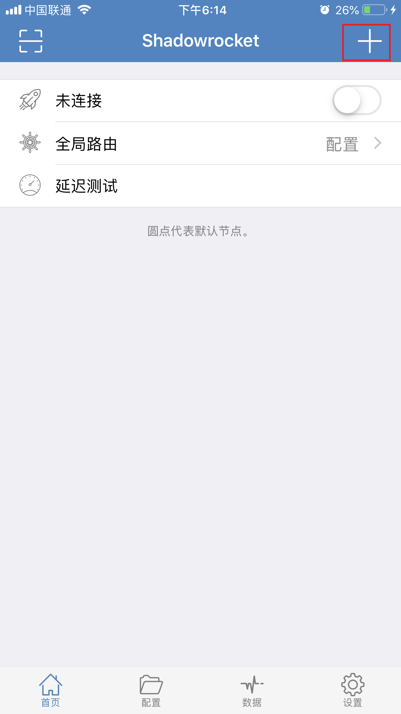
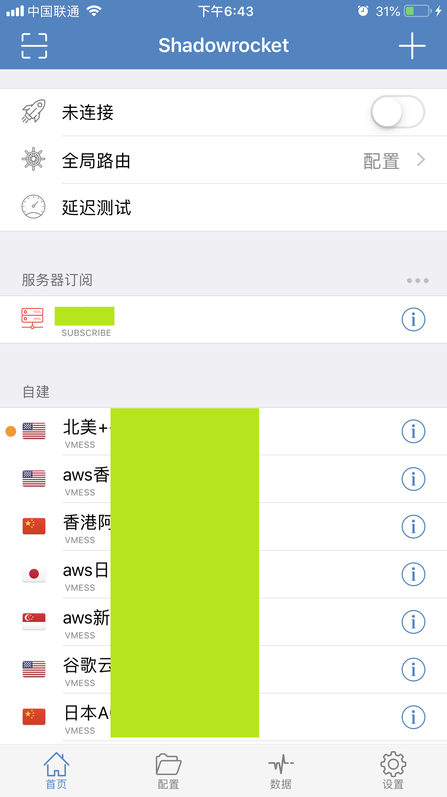

Shadowrocket 是 iOS 平台一款网络代理工具，它完整地支持 SSR,SS 协议，部分支持Vmess协议，且价格亲民，故可以作为科学上网工具使用。 由于某些特殊原因，此类软件在中国区 App Store 已被下架，如需使用，请到非中国区（如美区、港区等）的应用商店付费进行下载（也可以找站长要）。 软件地址(需外区账号)
首先打开 Shadowrocket，首次打开时首页展示图如下：
点击右上角 + 号，然后点击 类型 那一栏，选择 Subscribe：
将复制的URL粘贴到 URL 一栏（马赛克遮挡的部分，注意：此链接不能外露），备注 一栏填 自建(也可自己换个名字)，然后点击 完成 保存，接着等待获取所有订阅信息：
完成后显示图如下：
接着点击底部 设置 Tab，然后选择 服务器订阅，将第一项 打开时更新 打开，这样每次打开该软件时会自动更新订阅，保证是最新状态。
回到首页，打开第一栏的开关，首次打开时会有一个增加VPN配置的提示，选择Allow，然后就可以开始愉快地上网了。
Shadowrocket 正常情况足够满足日常需求，但如果对科学上网有更高要求，建议换用 Quantumult，它的整体性能更好且支持自定义规则、策略组等，如果其他需求可自行Google解决。